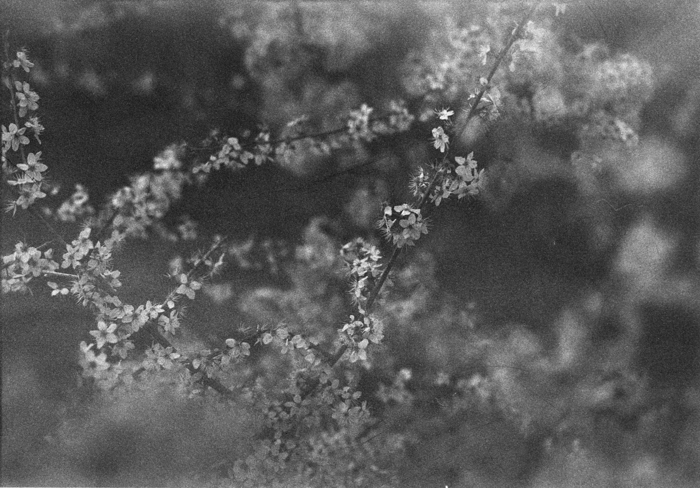
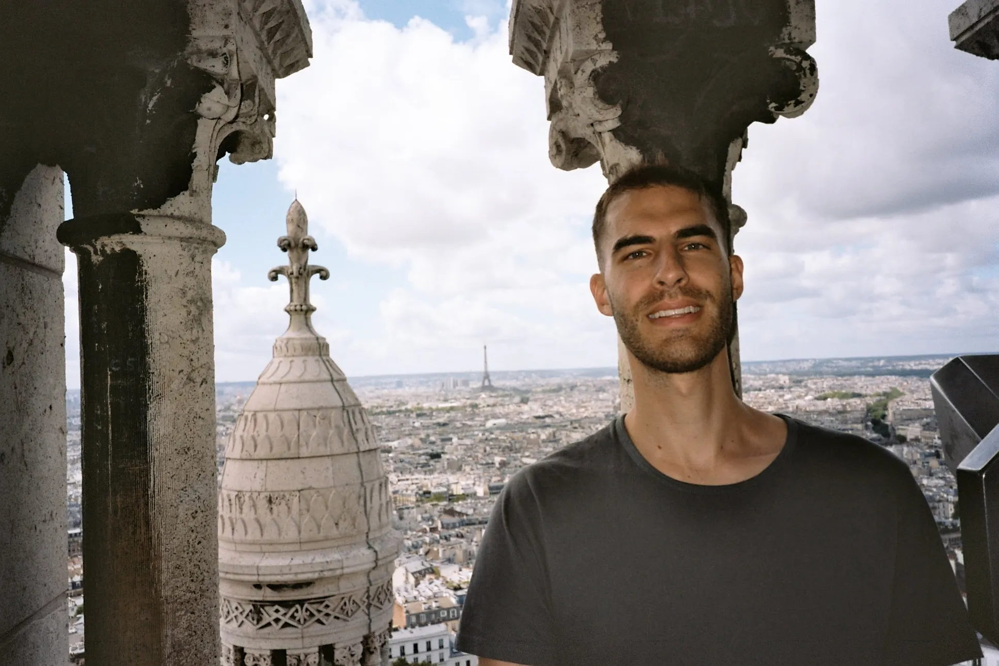

Stefan Dierauf
(25)

Lucky Pan 400
July 29, 2024
From the archives - Jöriseen snow hike
July 28, 2024
From the archives - End of hiking season 2023
July 28, 2024
From the archives - Family in the Oberland 2023
July 28, 2024
From the archives - Stockholm 2023
July 27, 2024

From the archives - Paris 2023
July 27, 2024
First real post - Lauenen
July 25, 2024
Olympus XZ-1 snaps around the neighborhood
March 11, 2024
Happy birthday Dan!
March 10, 2024
Olympus XA B&W
March 10, 2024
San Salvatore to Morcote
March 10, 2024
Medium format at Grindelwald
March 10, 2024
Previous